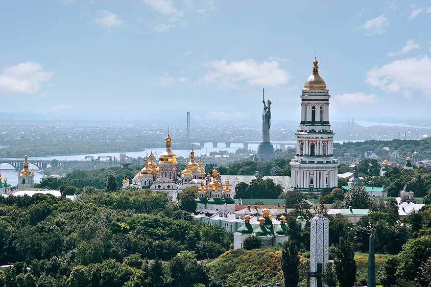
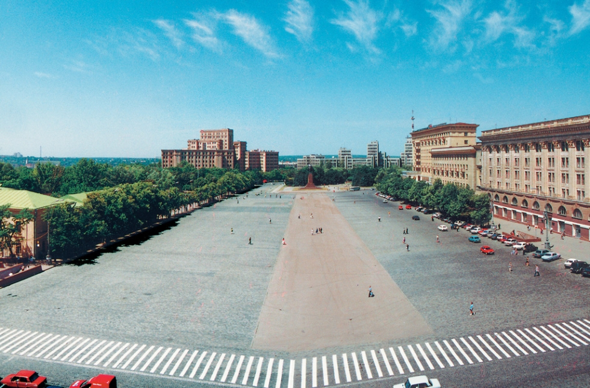
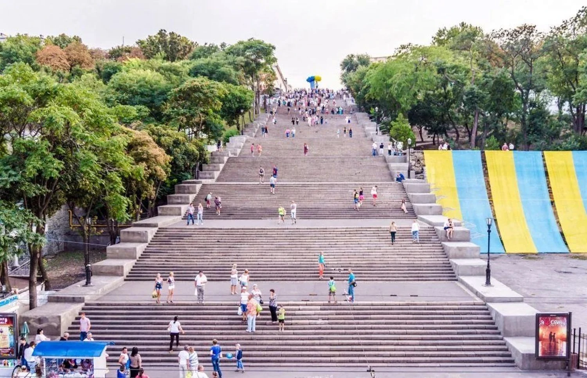

Три найбільші міста України
Київ — серце України
Київ — найдавніше та найбільше місто країни, засноване понад 1500 років тому.
Це політичний, культурний і туристичний центр.
- Головні визначні місця:
- Історичні пам'ятки ЮНЕСКО:
- Києво-Печерська лавра
- Софійський собор
- Центральні локації:
- Андріївський узвіз
- Майдан Незалежності та Хрещатик
- Природні та видові місця:
- Володимирська гірка
- Пейзажна алея з видами на Дніпро
- Історичні пам'ятки ЮНЕСКО:

Харків — місто студентів і конструктивізму
Харків часто називають «другою столицею». Це потужний освітній і науковий центр з унікальною архітектурою.
- Головні визначні місця:
- Великі площі та споруди
- Площа Свободи (одна з найбільших у Європі)
- Держпром — символ конструктивізму
- Парки та відпочинок:
- Парк Горького з канатною дорогою
- Сад імені Шевченка
- Сучасні об'єкти:
- Дзеркальний струмінь
- Великі площі та споруди

Одеса — південна столиця гумору
Одеса відома як «Південна Пальміра» — місто моря, гумору та багатонаціональної культури.
- Головні визначні місця:
- Історичні символи:
- Потьомкінські сходи
- Одеський оперний театр
- Пішохідні та бульварні зони:
- Дерибасівська вулиця
- Приморський бульвар
- Архітектурні перлини:
- Пасаж
- Воронцовський палац
- Історичні символи:
